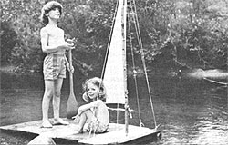
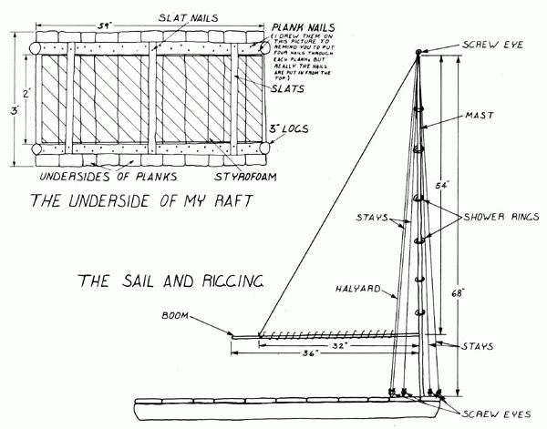

I've always been interested in boats and sailing, so one day I built a very small raft out of scraps of wood. My father, Bob, and I put it in our VW beetle and went to a nearby lake to try it out.
We carried the raft down to the shore and set it in the shallows. It floated, but its deck stayed about six inches under the water, and the raft was hard to move. Still, it was fun to use. The other children in the lake kept trying to stand on it. Finally one of them did. I swam behind the person on the raft and wished that it was big enough for both of us to stay on.
After that day, I decided that I wanted to build a real raft that had a sail, and to use it to float down Blood Brook (a stream that's near where I live) to the Sugar River. My father discouraged me from making such a long trip, but he did say that he'd help me make a raft with a sail, and that I could use it in the Blood Brook swimming hole.
We didn't want the raft to be big or heavy, because we knew we would have to transport it to the brook and back. So my father and I decided to make the raft fairly small, and to add styrofoam to the bottom to help it float.
First we found two three-inch-thick maple logs which were lying on the forest floor but weren't rotten. We wanted to use the logs to hold the deck planks together. We measured them, and cut each one to the length of 61 inches with a handsaw. Then we pulled all the bark off.
The raft's deck was made from 11 planks that were called "one-inch" boards. (They were supposed to be an inch thick, but they had been shaved a little and were really only about three-quarters of an inch thick.) With my father's help, I measured and cut each one to the length of three feet.
We then placed the two maple logs two feet apart and fastened the planks to them. The nails we used were big, 3-1/2 inches long, and I'm pretty sure they'll never pull out. When we were done attaching the planks, the deck was 59 inches long (it was a little shorter than the support logs) and three feet wide.
My father then bought three one-inch-thick sheets of styrofoam at a hardware store for about eight dollars. Each sheet was 56 inches long and 24 inches wide. We turned the raft over and squeezed the styrofoam into the two-foot space between the support logs. We put three thin wooden slats over the foam to hold it in place, and nailed those boards to the logs.
Then we varnished the entire raft so it wouldn't soak up water and sink.
After we had finished the raft, I still wanted to add a sail. (This part is a little hard to describe, so you might have to look at my drawing of the sail and rigging to help you understand it well enough to do it yourself.) First, we cut two maple sticks. One, the mast, was 68 inches long and 1-1/4 inches thick. The other, the boom, was 36 inches long and 3/4 inch thick.
Then we drilled a hole, toward the front of the raft deck, that was a little narrower than the mast. We tapered the end of the long maple stick with a hatchet, and then hammered the pole into the deck. It felt like pushing a cork into a bottle. Next we lashed one end of the boom to the mast, at a spot about 14 inches above the deck, with nylon string.
Nancy, my mother, helped me cut and hem a piece of sheet to make a triangular sail. It was 32 inches long at the bottom and 54 inches high.
To fasten the cloth to the boom, I brought the needle and thread through the sail, down and around the stick, up through the cloth again, down and around the boom again, and so on, until the, sail was completely attached. This is called whipstitching.
We connected the long edge of the sail to the mast by sewing six shower curtain rings to the 54-inch side of the cloth and slipping those rings over the mast.
At the top of the mast we screwed in a metal screw eye. Then we tied a nylon string onto the top of the sail and ran it through the screw eye and down to another screw eye we fastened into one side of the deck. This cord is called a halyard. It holds the sail up. To let the sail fall, we untie the string from the deck and let it go. To raise the sail again, we pull on the halyard and, when the sail is up, retie the string to its deck screw eye.
We also fastened three other screw eyes to the deck so that, including the one that holds the sail up, there are two on each side of the mast. We fastened two nylon strings from a deck screw eye through the one on the mast and back down to another deck screw eye on the other side. These are called stays, and they help keep the mast from falling down.
The finished sailing raft is light enough for me and my father to carry to our car and load on the roof. It floats well enough to hold up my father, who weighs 140 pounds, or me and my little sister. It's great fun to sail or paddle the raft around on the brook.
Because the raft is clumsy and heavy and square compared to a smooth, sleek, and light boat, it doesn't really sail unless there's a lot of wind. But if the day is very windy, the sail billows and pushes the raft. We don't have a rudder, so I use a canoe paddle to steer the raft. When there isn't enough wind to sail, I use the canoe paddle to make the raft move.
Your raft won't cost you too much money to build if you can find some old boards lying about. But you will have to buy some of the materials (we spent about $10.00 for the styrofoam and nylon string). So here are a few ideas on how to earn money: You can start a neighborhood newspaper (using yourself as a reporter) and pay someone else to type or print the paper for you. Or you can make cookies with your mother's ingredients, then sell them (and repay your mother). You could even clean out sheds or do other jobs.
No matter how you earn the money, though, I guarantee your raft will be worth every cent!
|
 NANCY WALLACE |
 |
|